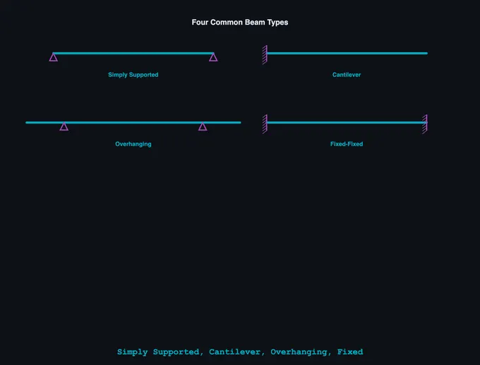

Tolerance & Fits Calculator
ISO 286 & ASME B4.1 limits & fits — Clearance • Transition • Interference
Display Controls
Σ Live equations — values substituted from current state
💡 What-if coach — manufacturing & application insights
1 Overview
The Tolerance & Fits Calculator is an interactive dual-standard limits and fits tool. Use the Standard selector at the top to switch between ISO 286 (metric, mm/µm) and ANSI/ASME B4.1 (inch). It computes hole and shaft limits, determines the fit type (clearance, transition, or interference), and visualizes the assembly relationship. When a shaft is inserted into a hole, the difference between their manufactured sizes determines whether the fit allows free movement, requires force to assemble, or falls in between — this calculator handles all the lookup tables and calculations automatically.
ISO 286 mode: specify any basic size (1–500 mm), hole designation (letter A–S + IT grade) and shaft designation (letter a–s + IT grade), or use one of nine preferred-fit presets (loose running H11/c11 to drive fit H7/s6). ANSI/ASME B4.1 mode: pick a basic size in inches and one of the 34 standard fit classes — RC (running & sliding), LC (locational clearance), LT (transition), LN (locational interference) and FN (force & shrink). In both modes the interactive canvas shows a colour-coded cross-section, and you can drag the shaft in and out to feel the fit.
2 Entering the Inputs
The calculator opens in Explore mode with a split layout: the canvas on the left showing the hole-shaft cross-section, and the sidebar on the right with fit selectors, presets, and results. The canvas displays the tolerance bands for both the hole and shaft with exaggerated scale so you can clearly see the gap or overlap.
First choose your Standard (ISO 286 or ASME B4.1) — the controls and units adapt automatically. In ISO mode: (1) enter a basic size in mm (e.g., 50). (2) Select the hole designation (e.g., H7). (3) Select the shaft designation (e.g., g6), or click a preset. In ANSI B4.1 mode: (1) enter a basic size in inches (e.g., 1.0). (2) Choose a fit class from the grouped dropdown (e.g., RC4 · Close running). Then (4) read the results — hole limits, shaft limits, tolerances, deviations, and fit analysis (max/min clearance or interference) — and (5) open the step-by-step calculation panel to see how each value is derived.
3 Reading the Result
Learn mode provides a guided tutorial through limits and fits concepts, and the lesson set follows the active Standard. In ISO 286 mode the six slides cover: what is a tolerance, what is a fit, the three types of fits, how the ISO 286 system works (basic size, IT grades, fundamental deviations), reading a designation like H7/g6, and the Δ (delta) correction for transition/interference holes. Switch to ASME B4.1 and the five slides instead cover: ISO vs B4.1, the five inch fit families (RC/LC/LT/LN/FN), reading a class designation, the three fit types, and how the inch tables are read.
Each slide includes clear explanations with the canvas updating to illustrate the current concept — including a matching cross-section for the standard you are viewing. Navigate with the Prev/Next buttons or the dots.
4 The Formulas Behind It
Explore mode is the main workspace. The canvas renders the hole and shaft cross-section with tolerance bands colour-coded: hole in one colour, shaft in another. The gap (clearance) or overlap (interference) between them is clearly visible. Use the "Slide In" and "Slide Out" buttons or drag the shaft to animate the assembly and see how the parts interact.
The results grid shows three cards: Hole (max limit, min limit, tolerance, ES, EI), Shaft (max limit, min limit, tolerance, es, ei), and Fit Analysis (max clearance/interference, min clearance/interference). The step-by-step calculation panel walks through every step: identifying the size range, looking up the IT tolerance value, determining the fundamental deviation from the letter code, calculating upper and lower deviations, and computing the final limits. This is exactly the procedure you would follow in an exam.
5 Try a Problem
Practice and Quiz both follow the active Standard. Practice presents a random fit — an ISO designation (e.g., Ø30 H7/k6, answered in mm) or an ANSI B4.1 class (e.g., Ø1.0 in RC4, answered in inches) — and asks you to calculate the hole max/min and shaft max/min limits and identify the fit type. Enter your values, select the fit type, and click "Check"; the solution panel reveals the full working if you need it. Your running score tracks performance.
Quiz mode runs five questions combining fit-type identification and a max clearance/interference value, in whichever standard is active. After five questions you see your score with a star rating and a review of each answer. Switching the Standard while in Practice or Quiz restarts the round with questions from that standard's pool.
6 Drawing toggles, exports & keyboard shortcuts
The cross-section canvas is rendered in an ISO 128 / ISO 129 engineering-drawing style with proper 45° section hatching, long-dash short-dash centerlines, arrow-style dimension lines with witness extensions, datum-A symbol, and Ra surface-finish ticks. Six checkboxes above the canvas let you toggle individual layers: Dimensions, End view, Equation overlay, Section hatch, Surface finish, and a debug Grid.
The bottom-centre classical equation overlay shows Cmax = ES − ei and Cmin = EI − es with values updated live. The right side mounts a true-proportional end view with concentric max/min hole and shaft circles. The bottom card is a Tolerance Zone Diagram showing both bands relative to the zero line — the standard textbook representation.
Show Calculations (the blue calculator button in the bottom-right of the canvas) opens a step-by-step derivation in classical LaTeX notation rendered with KaTeX. Includes all eight steps: size range, IT tolerances, hole and shaft deviations, limits, fit limits, fit classification, and a manufacturing context note.
Exports: the PNG button (top-right of canvas) captures the cross-section with a watermark; CSV exports all numeric results. Right-click the canvas to also Copy designation, Reset to defaults, or trigger either export. Keyboard: Ctrl+Z / Cmd+Z for undo, Ctrl+Shift+Z (or Ctrl+Y) for redo. URL deep-links: the address bar updates with ?d=50&hole=H7&shaft=g6 so you can share any fit with one click.
The Standard selector switches between ISO 286 (metric, mm/µm) and ANSI/ASME B4.1 (inch/thou). Display units follow the active standard — there is no separate units toggle, because converting an ISO fit to inches is not a real inch standard; inch users get B4.1's own RC/LC/LT/LN/FN classes instead. Internally every calculation is carried in SI and converted only for display. The Learning Panels below the calculator give live equations and a what-if coach with application notes (ISO mode also shows typical machining processes, e.g. IT7 = precision turning, Ra ≈ 1.6 µm).
7 Tips & Best Practices
- Start with the nine presets to develop intuition for how different fits look. Notice how clearance fits have visible gaps while interference fits show overlap.
- Memorise the key designations: H = hole with zero lower deviation, h = shaft with zero upper deviation. Letters before H/h in the alphabet produce clearance fits; letters after produce interference.
- IT grades determine tolerance magnitude: IT5-IT6 are precision grades, IT7 is general purpose, IT8-IT11 are for looser fits.
- H7/g6 (sliding fit) is the most commonly referenced fit in engineering exams. Know its calculation procedure inside out.
- To quickly determine fit type: if the maximum shaft size is less than the minimum hole size, it is always clearance. If the minimum shaft size is greater than the maximum hole size, it is always interference. Otherwise, it is transition.
- Use the step-by-step calculation panel in Explore mode as a reference when working Practice problems. Over time, you will memorise the procedure.
- Practice problems with different size ranges (e.g., 18-30, 30-50, 50-80) since the IT values change between ranges.
Tolerance & Fits Calculator — ISO 286 & ANSI/ASME B4.1, Online & Free

This tolerance and fits calculator works in two standards. In ISO 286 (metric) it computes hole and shaft limits, fundamental deviations (ES, EI, es, ei), and the fit class — clearance, transition, or interference — for any basic size from 1 to 500 mm and any IT5–IT11 grade. In ANSI/ASME B4.1 (inch) it gives the limits for all 34 standard fit classes (RC, LC, LT, LN, FN) from the published tables. It renders the classical tolerance-zone diagram, an ISO 128/129 engineering-drawing cross-section, and step-by-step calculations in LaTeX notation, all updated in real time.
What Are Limits and Fits?
When a shaft is inserted into a hole, the relationship between their sizes determines the fit. A clearance fit always has a gap between the parts, an interference fit requires force to assemble (press fit), and a transition fit may result in either slight clearance or slight interference depending on the actual manufactured sizes.
How the ISO 286 System Works
Step 1 — Basic size: The nominal diameter common to both hole and shaft (e.g., 50 mm).
Step 2 — Tolerance grade (IT): IT grades (IT5–IT16) define the magnitude of the tolerance band. Lower grades mean tighter tolerances.
Step 3 — Fundamental deviation: A letter code (A–Z for holes, a–z for shafts) positions the tolerance band relative to the basic size. H = hole with zero lower deviation; h = shaft with zero upper deviation.
Step 4 — Limits: Max limit = Basic size + upper deviation; Min limit = Basic size + lower deviation.
Common Fits (Hole Basis System)
- H11/c11 — Loose running fit: large clearance for contaminated or hot environments
- H9/d9 — Free running fit: good for bearings, high-speed rotation
- H8/f7 — Close running fit: moderate speed, accurate location
- H7/g6 — Sliding fit: precise sliding motion, minimal play
- H7/h6 — Locational clearance: easy assembly with minimal clearance
- H7/k6 — Locational transition: snug fit, light press or tap to assemble
- H7/n6 — Locational transition/interference: tighter transition fit
- H7/p6 — Press fit: light press required, semi-permanent assembly
- H7/s6 — Drive fit: medium press, permanent assembly
Step-by-Step Example: Ø50 H7/g6
Basic size = 50 mm → Size range 30–50 mm. IT7 = 25 µm, IT6 = 16 µm. Hole H7: EI = 0, ES = +25 µm → limits 50.000 to 50.025 mm. Shaft g6: es = −9 µm, ei = −25 µm → limits 49.975 to 49.991 mm. Min clearance = 0.009 mm, max clearance = 0.050 mm → Clearance fit.
Who Uses This Tool?
This calculator is ideal for mechanical engineering students, machinists and tool & die makers, CNC programmers, toolroom apprentices, and design engineers — anyone studying metrology, manufacturing processes, or machine design. It covers both the metric ISO 286 system used across Europe and Asia and the inch ANSI/ASME B4.1 system used in US job shops and manufacturing, so it suits ASME, NIMS and apprenticeship exam preparation as well as ISO coursework. Practice mode and quiz mode help prepare for exams and competency assessments.
Common ISO Fits — Quick Reference (for 25 mm nominal)
| Fit Designation | Type | Clearance / Interference (μm) | Application |
|---|---|---|---|
| H7/g6 | Clearance (sliding) | +7 to +41 | Sliding bearings, pistons in cylinders |
| H7/f7 | Clearance (running) | +20 to +61 | Journal bearings, gearbox shafts |
| H7/h6 | Clearance (location) | 0 to +34 | Locating parts, removable pins |
| H7/k6 | Transition | −15 to +19 | Keyed hubs, coupling halves |
| H7/n6 | Transition (tight) | −28 to +6 | Tight-fitting bushings, clutch hubs |
| H7/p6 | Interference (light press) | −35 to −1 | Bearing races, gear blanks |
| H7/s6 | Interference (heavy press) | −57 to −23 | Permanent assemblies, wheels on axles |
ISO Tolerance Grade Values (IT) — Selected Grades
| Grade | Tolerance (μm) for 25 mm | Typical Process |
|---|---|---|
| IT5 | 9 | Grinding, honing |
| IT6 | 13 | Precision turning, grinding |
| IT7 | 21 | Turning, boring, milling |
| IT8 | 33 | General machining |
| IT9 | 52 | Drilling, shaping |
| IT11 | 130 | Sand casting, forging |
ANSI/ASME B4.1 Inch Fits (RC · LC · LT · LN · FN)
ISO 286 is a metric standard, so it cannot simply be "converted" to inches. Shops working in inches use ANSI/ASME B4.1-1967 (R2009), Preferred Limits and Fits for Cylindrical Parts, which is also a basic-hole system but selects fits from named classes rather than letter+grade symbols. Switch the calculator's Standard selector to ASME B4.1 to work entirely in inches (limits in thousandths of an inch). The five families are:
- RC — Running & Sliding (clearance, RC1–RC9): rotating and sliding parts, from close sliding (RC1) to loose running (RC9).
- LC — Locational Clearance (LC1–LC11): parts that must assemble and locate but are normally stationary.
- LT — Locational Transition (LT1–LT6): accurate location where a little clearance or interference is acceptable.
- LN — Locational Interference (LN1–LN3): rigid, accurate location with light interference.
- FN — Force & Shrink (interference, FN1–FN5): press and shrink fits, from light drive (FN1) to heavy force/shrink (FN5).
ANSI B4.1 ↔ ISO 286 Equivalents (Quick Reference)
| B4.1 class | Type | ≈ ISO symbol | Typical use |
|---|---|---|---|
| RC2 | Sliding clearance | H6/g5 | Accurate location, free turning |
| RC4 | Close running | H8/f7 | Accurate machinery, moderate speed |
| RC7 | Free running | H9/d8 | Large temperature swings, loose |
| LC2 | Locational clearance | H7/h6 | Spigots, removable parts |
| LT3 | Locational transition | H7/k6 | Keyed hubs, accurate location |
| LN2 | Locational interference | H7/p6 | Dowels, located press fits |
| FN2 | Medium drive | H7/s6 | Shrink fits on steel, gear hubs |
| FN4 | Force fit | H7/u6 | High-torque permanent assemblies |
Worked inch example — Ø1.00 in RC4: in the 0.71–1.19 in range the hole is +1.2/0 thou (1.0012/1.0000 in) and the shaft is −0.8/−1.6 thou (0.9992/0.9984 in), giving 0.8–2.8 thou of clearance — a clearance fit. RC4 corresponds approximately to the ISO H8/f7 close-running fit.
Interference, Press & Shrink Fits — How to Calculate
An interference fit — also called a press fit or force fit — exists whenever the shaft is larger than the hole, so the parts must be pressed together and grip by elastic strain. This calculator reads the interference straight from the fit limits: maximum interference = shaft upper limit − hole lower limit, and minimum interference = shaft lower limit − hole upper limit. In ISO 286 the common interference fits are H7/p6 (light press, locating), H7/s6 (medium shrink) and H7/u6 (heavy force); in ANSI/ASME B4.1 they are the LN (locational interference) and FN (force & shrink) classes. For a shrink fit the required heating or cooling follows from the interference and the coefficient of thermal expansion — the Thermal Expansion Calculator pairs naturally with this tool.
US shops describe the same physics with legacy vocabulary: an allowance is the intended minimum clearance (or maximum interference), a slip fit is a hand-push clearance fit, a drive fit is a light press, and a force fit or shrink fit is a heavy interference. Limits and fits (this page) size the two mating features; geometric controls such as position, concentricity and runout come from ASME Y14.5 geometric dimensioning and tolerancing (GD&T), which works alongside — not instead of — a B4.1 or ISO 286 fit.
Explore Related Simulators
If you found this Tolerance & Fits simulator helpful, explore our Vernier Caliper simulator, Micrometer Screw Gauge simulator, Bearing Selection tool, Shaft Torsion simulator, and Thermal Expansion Calculator, and the Sheet Metal Bend Radius Calculator for more hands-on practice.